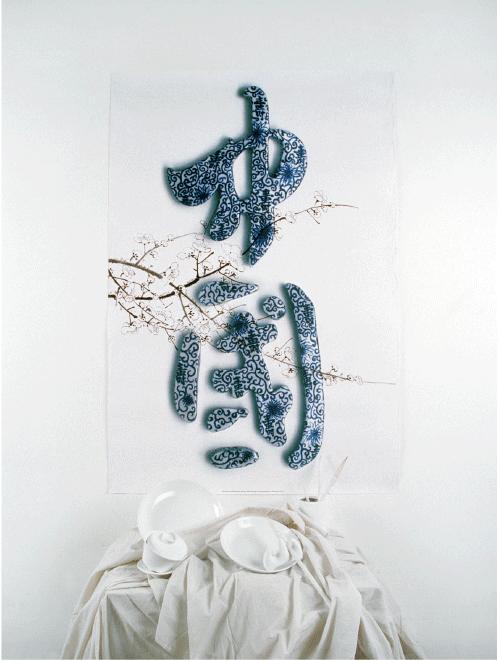

China Image Measures: 89,5 x 128 cm Technique: Silk Screen Place and date: Berlin, August 2004 Client: Taiwan Poster Design Association Description: Poster for the Taiwan Poster Design Association. Photo by Yin Jiang (Beijing) 2006
home back
